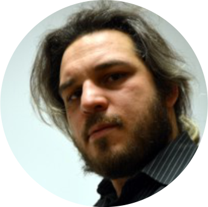

O konferencji
Konferencja odbędzie się w dniach 8-10 kwietnia 2016 r.
Nasza konferencja ma na celu zapoznanie studentów z dostępnymi technikami i praktycznymi zastosowaniami matematyki i informatyki, o których rzadko mówi się na kursach bioinformatycznych. Bioinformatyka jest interdyscyplinarną dziedziną nauki obejmującą wykorzystanie metod obliczeniowych do badania danych biologicznych. Jest ona silnie powiązana z ewolucją molekularną i genetyką populacyjną. Wykorzystuje narzędzia matematyczne i informatyczne do badań nad informacją biologiczną zebraną w ciągu ostatnich dekad. Bioinformatyka stara się odpowiedzieć na pewne pytania biologiczne, rozwiązać problemy ujęte w ramy algorytmów i baz danych, tak aby usystematyzować, ujednolicić, a jednocześnie poszerzyć wiedzę biologiczną.
Prelegenci
prof. dr hab. Daniel Wójcik
Pracownia Neuroinformatyki Instytutu Biologii Doświadczalnej im. Nenckiego PAN w Warszawie.
Zajmuje się zagadnieniami modelowannia i analizy aktywności neuronalnej, elektrofizjologii, neurobiologii obliczeniowej, a także tworzeniem neuroinformatycznych systemów bazodanowych takich jak trójwymiarowe atlasy mózgu. Podczas konferencji przedstawi uczestnikom temat opatrzony tytułem "Od ciągu iglic po zachowanie myszy: modelowanie zdarzeń punktowych w neurobiologii".
dr hab. Jarosław Żygierewicz
Zakład Fizyki Biomedycznej na Wydziale Fizyki Uniwersytetu Warszawskiego
Zajmuje się metodologią analizy sygnałów bioelektrycznych i modelowaniem układów dynamicznych, a w szczególności układów neuronalnych. Podczas konferencji wygłosi wystąpienie na temat interfejsów mózg-komputer.
prof. Marek Lankosz
Katedra Fizyki Medycznej i Biofizyki na Wydziale Fizyki i Informatyki Stosowanej Akademii Górniczo-Hutniczej w Krakowie
Zajmuje się badaniami biomedycznymi i środowiskowymi. Podczas konferencji wygłosi wykład o mikroobrazowaniu pierwiastkowym tkanek objętych procesem nowotworzenia i neurodegeneracji.
dr hab. Zenon Matuszak
Zespół Obrazowania i Modelowania w Katedrze Fizyki Medycznej i Biofizyki na Wydziale Fizyki i Informatyki Stosowanej Akademii Górniczo-Hutniczej w Krakowie
W pracy zetknął się z różnorodnymi metodami badawczymi, m.in. spektroskopią elektronowego rezonansu paramagentycznego, metodami biooptyki, terapią fotodynamiczną, a także analizą fraktalną. Tematem wygłoszonego podczas konferencji wykładu będzie biofizyka komórki upigmentowanej, a dokładniej "Podejście systemowe. Melanogeneza, melaniny, melanoma".
dr hab. Piotr Suffczyński
Zakład Fizyki Biomedycznej na Wydziale Fizyki Uniwersytetu Warszawskiego
Zajmuje się fizjologicznymi sygnałami bioelektrycznymi mierzonymi u człowieka, a także modelowaniem komputerowym układu nerwowego. Podczas konferencji wygłosi wykład na temat dialogu neuronu ze środowiskiem przedstawiając nowe spojrzenie na padaczkę.
prof. Wiesław L. Nowiński
Centrum Anatomii Wirtualnej i Symulacji Chirurgicznej przy Uniwersytecie Kardynała Stefana Wyszyńskiego w Warszawie
Zajmuje się m. in. atlasami mózgu, przetwarzaniem obrazów medycznych, rzeczywistością wirtualną, komputerowym wspomaganiem diagnozy i leczenia chorób. Wraz ze swoim zespołem stworzył 35 produktów atlasów mózgu wykorzystywanych w neurochirurgii, neuroradiologii, neurologii, mapowaniu mózgu oraz edukacji. Podczas konferencji przybliży uczestnikom temat atlasów mózgu, a w szczególności ich budowy, zastosowań ale także i przyszłych kierunków rozwoju.
prof. Ryszard Rudnicki
Oddział Instytutu Matematyki PAN w Katowicach, Centrum Zastosowań Matematyki tego Instytutu
Jego zainteresowania obejmują układy dynamiczne, równania różniczkowe cząstkowe, operatory Markowa, metody probabilistyczne i szeroko rozumianą biologię matematyczną. Jest autorem książki "Modele i metody biologii matematycznej". Podczas konferencji wygłosi wystąpienie dotyczące modeli fenotypowych.
dr hab. prof. UAM Izabela Makałowska
Pracownia Bioinformatyki Instytutu Biologii Molekularnej i Biotechnologii w Poznaniu, Wydział Biologii Uniwersytetu im. A. Mickiewicza w Poznaniu
Zajmuje się badaniami dotyczącymi ewolucji molekularnej, genomiki porównawczej, transkryptomiki, struktury genomów, a także narzędziami do ich analizy. Podczas konferencji opowie o genomowych surowcach wtórnych.

dr Rafał Kawa
Instytut Informatyki i Matematyki Komputerowej Uniwersytetu Jagiellońskiego
Oprócz programowania, algorytmów i struktur danych oraz geometrii obliczeniowej z pasją wykłada studentom także zagadnienia grafiki i animacji komputerowej. W działalności naukowej zajmował się między innymi syntaktyczno-strukturalnym rozpoznawaniem złożonych kształtów, dlatego podczas konferencji przybliży uczestnikom temat diagramów Voronoi w naukach przyrodniczych, a dokładniej algorytmów ich wyznaczania -gorszych, lepszych i najlepszych.
prof. n. med. Aleksander L. Sieroń
Katedra Biologii Molekularnej i Genetyki Wydziału Lekarskiego Śląskiego Uniwersytetu Medycznego w Katowicach
Specjalizuje się w biologii molekularnej i genetyce chorób powiązanych z zaburzeniami macierzy pozakomórkowej. Interesuje się szczególnie biologią molekularną komórek macierzystych, a także syntetycznymi rusztowaniami istotnymi w leczeniu skutków chorób i urazów. Podczas konferencji wygłosi wykład pod tytułem " Skąd pochodzi i jak ewoluowało życie na ziemi? ".
dr hab. prof. UŚ Urszula Boryczka
Zakład Algorytmiki i Inteligencji Obliczeniowej Uniwersytetu Śląskiego w Katowicach
Interesuje się zagadnieniami sztucznej inteligencji, uczenia maszynowego, algorytmami bazującymi na danych genetycznych i ewolucyjnych a także aspektami bazodanowymi. Podczas konferencji wygłosi wykład, którego tytuł brzmi: " Inteligencja obliczeniowa inspirowana naturą".

dr Jacek Śmietański
Instytut Informatyki Uniwersytetu Jagiellońskiego
W swoich badaniach koncentruje się na bioinformatyce strukturalnej, a głównie na rozwijaniu rozwiązań do przywidywania i klasyfikowania oddziaływań w cząsteczkach RNA i białek. Jest opiekunem naukowym Koła Naukowego Bioinformatyki "BIT" UJ. Podczas konferencji przybliży uczestnikom temat przewidywania oddziaływań międzynukleotydowych oraz struktur RNA.
dr hab. inż. prof. PWr Małgorzata Kotulska
Zespół badawczy Bioinformatyki i Biofizyki Nanoporów Katedry Inżynierii Biomedycznej Politechniki Wrocławskiej
W pracy badawczej skupia się na tematyce nanoporów, w tym elektroporów i białkowych kanałów jonowych, natomiast wykłada także zagdanienia bioinformatyki i biologii obliczeniowej. Podczas konferencji opowie o powstawaniu i działaniu złogów amyloidowych w chorobach neurodegeneracyjnych, jednak z perspektywy bioinformatyka.
dr Przemysław Spurek
Zakład Uczenia Maszynowego na Wydziale Matematyki i Informatyki Uniwersytetu Jagiellońskiego
Zajmuje się szeroko pojętym nauczaniem maszynowym oraz analizą obrazu. Jego głównym obszarem jest nauczanie nienadzorowane. Podczas konferencji wygłosi wystąpienie na temat Metody Independent Component Analysis.
dr Przemysław Spurek
Zakład Uczenia Maszynowego na Wydziale Matematyki i Informatyki Uniwersytetu Jagiellońskiego
Zajmuje się szeroko pojętym nauczaniem maszynowym oraz analizą obrazu. Jego głównym obszarem jest nauczanie nienadzorowane. Podczas konferencji wygłosi wystąpienie na temat Metody Independent component analysis.
dr inż. Paweł Hottowy
Adiunkt na Wydziale Fizyki i Informatyki Stosowanej AGH
Jego zainteresowania badawcze dotyczą rozwoju oraz zastosowań technologii wielokanałowej rejestracji oraz stymulacji komórek nerwowych, opartej na matrycach mikroelektrodowych oraz specjalizowanych układach scalonych. Zaprojektowane przez niego systemy pomiarowe są wykorzystywane między innymi do badań siatkówki oka, prac nad protezami dla niewidzących oraz do charakteryzacji połączeń funkcjonalnych w różnych obszarach mózgu.
Rejestracja
W tym roku mamy przyjemność zaprosić Państwa do uczestnictwa a konferencji w dniach od 8 do 10 kwietnia 2016r.
Uczestnictwo bierne
Uczestnictwo bierne w konferencji wymaga rejestracji.Uczestnictwo czynne
Aktywni uczestnicy konferencji mogą zgłaszać chęć wygłoszenia referatu lub przedstawienia plakatu. Zgłoszenia można przesyłać do dnia 20.03.2016 (do godziny 23:59). Zgłoszenie powinno mieć formę wydłużonego abstraktu (max. 300 słów bez bibliografii). Bibliografia powinna mieć formę zgodną ze standardem MLA.Referaty
Czas trwania wystąpienia to 20 minut (15 minut prezentacji + 5 minut na dyskusję).Sesja posterowa
Preferowane formaty posterów to A1 lub A0. Na plakacie, poza treścią, powinny znaleźć się informacje na temat autorów, abstrakt oraz spis literatury zgodnie ze standardem MLA.Zapisy zarówno czynnych jak i biernych uczestników znajdują się w formularzu dostępnym tutaj:
FAQ
1. Czym jest konkurs abstraktów?
Z oczywistych przyczyn jakim jest ograniczony czas trwania konferencji osoby zainteresowane wygłoszeniem prezentacji proszone są o wysłanie abstraktu streszczającego ich pracę. Osoby, których abstrakty zostaną wyłonione, wygłoszą 20 minutowe prezentacje ustne (powiadomimy Was mailowo). Pozostałych zapraszamy do przygotowania posteru.2. Czym jest poster?
Jest to forma prezentacji swoich badań/zainteresowań naukowych w formie plakatu. Używany powszechnie format to A0. Postery zawieszane będą na tablicach i wszyscy uczestnicy konferencji będą mogli zaznajomić się z ich tematyką. Autorzy na czas trwania sesji posterowej proszeni są o przebywanie w pobliżu swojego plakatu w celu dokładniejszego przybliżenia tematu oraz odpowiedzi na pytania osób zainteresowanych. Bardzo powszechna forma wystąpień na konferencjach nauk biologicznych. przykładowy poster3. Czy istnieje opłata konferencyjna?
Udział w konferencji jest płatny. Opłata konferencyjna zależna jest od wybranego pakietu:Pakiet BASIC - teczka z zawartością + długopis
Pakiet PREMIUM - zestaw konferencyjny
Pakiet FULL - zestaw konferencyjny + obiad.
Konto do wpłat zostanie podane w mailu potwierdzającym.
4. W jakim języku jest prowadzona konferencja?
Konferencja będzie prowadzona w języku polskim, dlatego też preferowane jest zarówno wysyłanie abstraktów, jak i przygotowanie wystąpień i posterów w języku polskim.5. Jak do nas dojechać?
Adres: WYDZIAŁ MATEMATYKI I INFORMATYKI UNIWERSYTETU JAGIELLOŃSKIEGO Kraków, ul. Łojasiewicza 6 Dojechać można autobusami linii: 194 (do przystanku: Norymberska) oraz 106,166, 178 (do przystanku: Rostworowskiego) lub tramwajami linii: 11, 18, 23 i 52Przydatne strony:
www.mpk.krakow.plkrakow.jakdojade.pl
Baza noclegowa
Organizatorzy